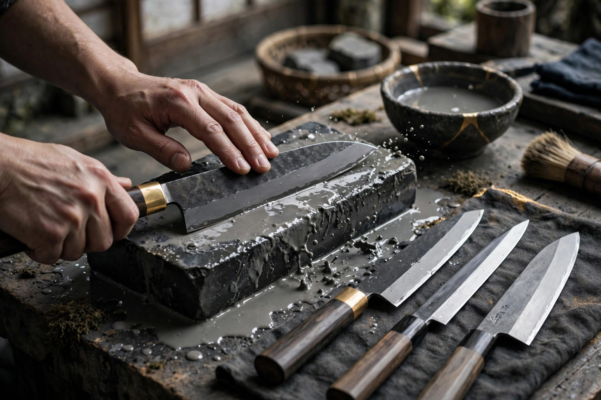

包丁研ぎに合う天然砥石の選び方 ― 硬度と粒度の目安

包丁の仕上げに使う天然砥石は、硬度Lv3.5〜4.5前後（目安）の帯域が扱いやすいとされることが多く、まずはこの範囲から選ぶのが無難です。包丁の種類によって求める仕上がりは変わりますが、荒研ぎ・中研ぎまで天然で揃える必要はなく、中砥は人造、仕上げだけ天然という組み合わせが現実的です。
包丁の種類別に見る適性
天然砥石は主に「仕上げ」の工程で真価を発揮します。包丁ごとに、仕上げで何を求めるかが少しずつ違います。
出刃・柳刃などの和包丁（片刃）
出刃は魚の骨に当たる場面もあり、刃先の強さと切れ味の両立が求められます。柳刃は刺身を引く滑らかさが大切で、細かく詰まった刃先が好まれます。どちらも鋼の地肌を引き出す霞仕上げと相性がよく、天然の仕上げ砥がよく使われる分野です。
牛刀・家庭用両刃包丁
牛刀や三徳などの両刃は、食材を選ばない万能さが持ち味です。過度に鏡面に仕上げるより、適度な細かさで食材への食い付きを残す方が使いやすい場合もあります。ステンレス製の場合は、砥泥のよく出る中硬の石が扱いやすいとされることがあります。
硬度Lvの目安表
当サイトでは硬度をLv1〜5+で表しています。あくまで当サイト内での目安として、包丁用途では次のように考えています。
| 硬度（目安） | 研ぎ味の傾向 | 包丁での使いどころ |
|---|---|---|
| Lv2.5〜3.5 | 砥泥がよく出て研ぎが速い | 霞仕上げ、地肌作り、中仕上げ寄り |
| Lv3.5〜4.5 | 速さと細かさのバランスが良い | 包丁の仕上げの中心帯。初めての一枚にも |
| Lv4.5〜5+ | 砥泥が出にくく刃先を細かく詰める | 柳刃や剃刀の最終仕上げ。扱いには慣れが必要 |
硬い石ほど上等、というわけではありません。硬すぎる石は研ぎ汁が出にくく、刃が滑って研げている実感が薄くなりがちです。自分の技量と用途に合った帯域を選ぶことが大切です。なお粒度については、仕上げ砥とされる石は人造換算でおおむね #6000 以上相当と評されることが多いですが、天然砥石の粒度は一枚ごとに幅があります。
サイズの目安と、現実的な組み合わせ
- 長さ：200mm前後（目安）あると、包丁の刃渡りを活かして研げます
- 幅：70〜75mm前後（目安）。狭い石は刃がはみ出しやすく、安定しません
- 厚み：20mm以上あると、長く使えて面直しもしやすいとされます
最後に、組み合わせの話です。欠けた刃の修正や刃付け直し（荒研ぎ〜中研ぎ）は、番手表示が安定し価格も手頃な人造砥石が合理的です。天然砥石は高価なものも多く、全工程を天然で揃える必要はありません。「#1000前後の中砥は人造、最後の仕上げだけ天然」という構成なら、費用を抑えながら天然ならではの研ぎ上がり――刃先の細かさと地肌の美しさ――を得られます。これが、多くの研ぎ手がたどり着く現実的な形です。
包丁に合う仕上げ砥を探す
- 砥石データベース ― 硬度Lvやサイズで絞り込んで探せます
- 鑑定済み砥石のご案内（事業紹介） ― 実際に包丁で研いでテストした石だけを取り扱います
- お問い合わせ ― 研ぎたい包丁の種類を添えてご相談ください
よくある質問
- 初めての天然砥石はどの硬さがいいですか？
- 包丁の仕上げ用であれば、硬度Lv3.5〜4.5前後（目安）が扱いやすいとされることが多い帯域です。硬すぎる石は研ぎ汁が出にくく、初心者には刃の当たりを感じ取りにくい場合があります。
- 天然砥石だけで研ぎを完結させる必要がありますか？
- その必要はありません。荒研ぎ・中研ぎは番手が安定した人造砥石で行い、仕上げだけ天然砥石を使う組み合わせは、合理的で広く行われている方法です。
- ステンレス包丁にも天然砥石は使えますか？
- 使えます。ただし鋼に比べて研ぎ味が軽く感じられることがあり、硬度が中程度で砥泥の出る石の方が相性を感じやすい場合があります。心配な場合は購入前に相談するのがおすすめです。
- 砥石のサイズはどれくらいが目安ですか？
- 包丁用では長さ200mm前後、幅70〜75mm前後（目安）があると研ぎやすいとされます。出刃など刃渡りの長い包丁を使う場合は、ひと回り大きい石が安定します。